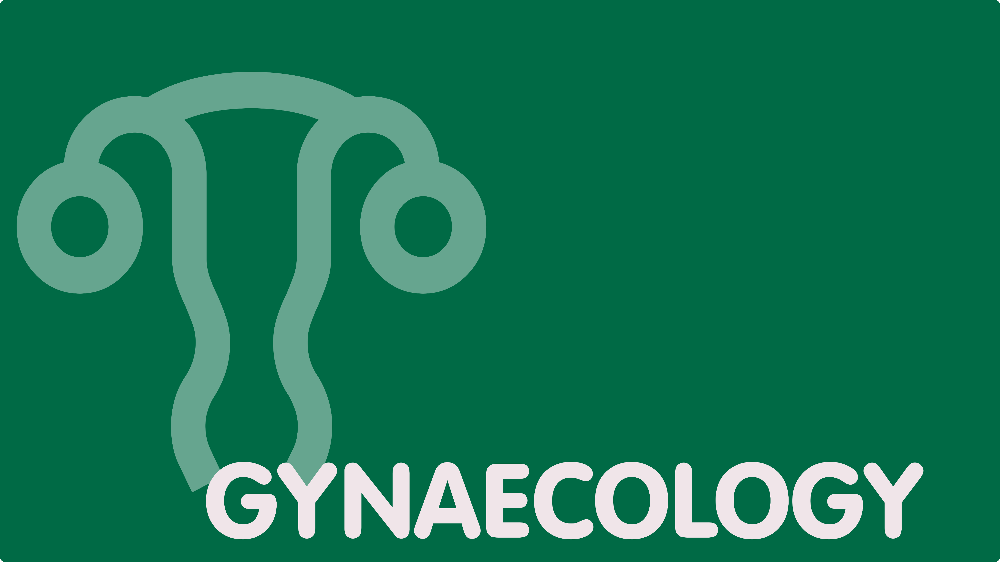

Klik hieronder voor de nieuwste WEBINARS en CONTOURINGS.

iROS CME Webinar: Fractionation in Head...
WatchTPL Group Updates & Exchange Forum...
WatchiROS CME Webinar: Abdomino-Pelvic (AP)...
WatchLung
Lung
Lung